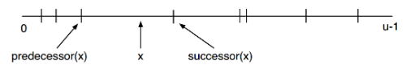
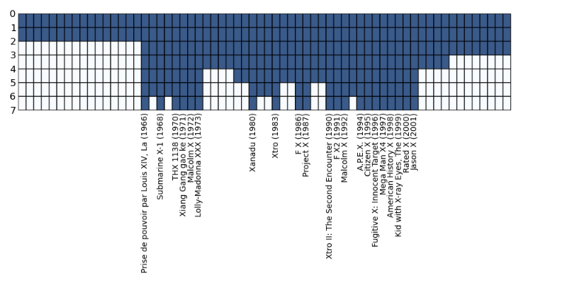
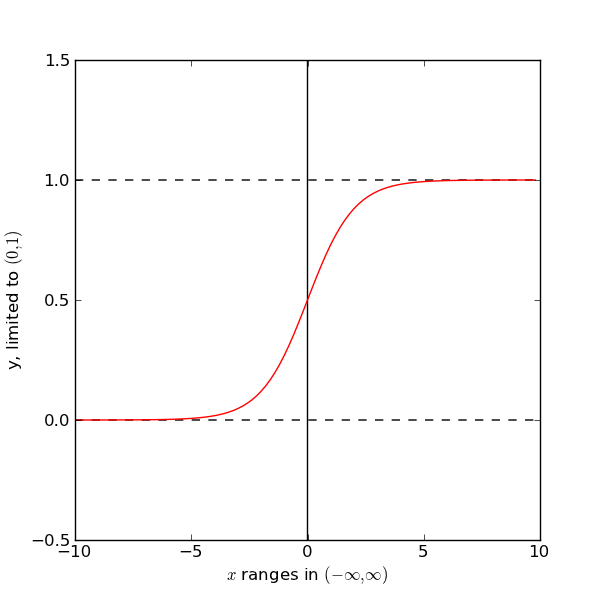

Sun, Dec 1, 2013
Predecessor search for Big Data: x-fast tries, locality of reference and all that
Abstract: We get a bird eye view on the fascinating field of the locality of reference-type of problems and then get practical and solve our toy problem by implementing an x-fast trie in Python.
Imagine you are developing a flight search website. You need to build a tailored search index that is really good at one task: for the given date and search criteria returns the list of the next flights. How is it better to approach designing this?
This is an example of encountering predecessor/successor search problem in practice. Predecessor/successor search (or predecessor search for ‘short’) stands for cases when we have some dictionary (in our case, the flight timetable) with its keys (departure times) making up a subset of some ordered sequence (like all minutes in the time range of interest or something).
We want to design a system that for a given query element of that sequence (such as our preferable flying date and time) would return the closest next subsequest element that is a key of our dictionary(next flight from our query time):
[

]
http://youtu.be/AjFtTQevtq0
For the flight search website that would include the two following typical database tasks:
- Looking up: searching for the next closest flights meeting some criteria for the given date and time (like “the next flight to Paris on Oct 9th after 9am”);
- Updating: adding, editing or deleting specific flight records on request (like “the flight to Paris on Oct 9th 10am is canceled”).
This problem of optimizing the flight is an example of the predecessor/successor search problem. It involves storing a dictionary with keys that make a subset of some subset
X-fast tries is a data structure designed to store a subset of elements from a sequence in such a way so that it is possible to retrieve the next closest element easily. People refer to such problems as the predecessor/ successor search.
I have been reading up about x-fast tries recently and decided to write up some notes and also to make a simple python implementation to go along with it.
Obviously, it is incredibly inefficient to just store them as a list and go through the list each time. We need some kind of a search tree.
Times of planes leaving (for example, in minutes) make up a subset of all the possible times (all minutes in the span of the existence of that specific airport). thus we can store them as a set of natural numbers in a certain range of integers.
So with that representation we can use the Direct Access Table. That is, make up a binary table of size |S|.
What are some ways to tackle the predecessor/successor problem? Naively we can just move along up the Direct Access Table until we stumble upon the next record. The worst case scenario here would be just going through the whole empty table, O(m) .
One improvement is to store pointers for predecessor/successor elements at each element. It does improve the predecessor/successor retrieval to just O(1) . However, we have a inserting or deleting elements becomes a costly procedure as we have to reassign every nearby value, O(m).
Here is the proposition. We build an ordered binary tree atop the m elements and mark every node that is a parent of the checked element. With each layer having two times less elements we only increased the total size of the array by two.
Toy problem
Here is a nice toy problem that I came up with in hope that it would make some cool-loking plots.
With movie and tv show titles such as X-files, X-men and American History X, we have a trope of X standing for anything misterious (and heavily implied to be hip). How often are movies with such titles released? What was the first X-movie released since your birth?
To find out, let us build the X-fast trie index for such X-titled movies by the year of release.
Here is a plot of what we get:
[

]
Pretty nice, huh?
Mon, May 20, 2013
Floating-point considered harmful
Abstract: Modern datatypes for quantities (such as length, time or a number) should employ ideas from the functional programming: keep track of when the rounding errors arise, support defining with functions, represent results appropriately to the context. Flaky, an open source framework, wants to make things right.
Floating point datatype is the de-facto standard for real world quantities. Whether it is your GPS coordinates or sizes of the bridge nearby (likely designed in AutoCAD), this datatype lies in the foundation of every system. Since its introduction in the dawn of computing, floating point was accepted almost universally.
Advantages such as scalability, resilience and ease of use make floating point the datatype of choice again and again. However, it is also fragile and prone to errors. This limitations are well known, of course, and could be minimized with appropriate expertise and focus.
And yet I believe that we, as an industry, could do better. Number representation based on the ideas of functional programming minimizes flaws characteristic to the floating point datatypes. And it can be made as resilient and scalable as the floating point. In this article, I outline why I decided to write Flaky, an open source library that attempts to implement such concepts.
In the first section we will glance at illustrating cases of when floating point breaks and try to understand what flaws should be addressed. We then look at other initiatives in this space. Finally, I introduce the design that I came up with for Flaky.
When floating point fails
Let us consider illustrative cases of when floating point representation leads to dramatically wrong answers.
Accumulating errors
Well, this one is obvious. When the number cannot be represented exactly, it has to be rounded up. These rounding errors can accumulate and can lead to silly results.
Let us, for example, take the square root of a number several times, and then try to reproduce the original value with the reversal operation (that is, taking squares)
# price.py listing, a Python script
import math
INITIAL_VALUE=1.9934545345
def reversable_iterations(iteration_number):
test_floating = INITIAL_VALUE
for i in range(iteration_number):
test_floating = math.sqrt(test_floating)
for i in range(iteration_number):
test_floating = test_floating**2
return 'with '+str(iteration_number)+' iterations, we get '+str(test_floating)
print 'The intial value is ',INITIAL_VALUE
print reversable_iterations(1)
print reversable_iterations(10)
print reversable_iterations(20)
print reversable_iterations(40)
print reversable_iterations(50)
print reversable_iterations(60)
This yields:
The intial value is 1.9934545345
with 1 iterations, we get 1.9934545345
with 10 iterations, we get 1.9934545345
with 20 iterations, we get 1.99345453444
with 40 iterations, we get 1.99311204568
with 50 iterations, we get 1.64872126455
with 60 iterations, we get 1.0
That the end result breaks is hardly a surprise. Moreover, a similar effect could be achieved for any number representation datatype. Just from the general principles, if the size of the Kolmogorov complexity of a number is larger than the memory allocated for the datatype, these types of errors cannot be ruled out.
What I wanted to emphasize here instead is the total equanimity of the floating type. It is very hard to understand what is going on at various stages. In my opinion, this is an incredible engineering design flaw.
To see what I mean, let us figure out why the error is of order of 10% for 50 iterations, but converges to a wrong answer at 60. To do this we have to know how the number is represented internally, look up the default mantissa/significand size for the programming language of our choice and make the estimation calculation on a piece of paper.
The lack of the uncertainty estimation defeats the whole purpose of any computation.
The quadratic equation
Even writing a program that solves the quadratic equation
for arbitrary constant values is a serious task.
For example, let us consider the following equation
[
 ]
Note that there is no constant term and thus one solution is simply zero. However, the naive solution with the quadratic formula fails to reflect this. Here is the first Google result for “quadratic equation solver”:
]
Note that there is no constant term and thus one solution is simply zero. However, the naive solution with the quadratic formula fails to reflect this. Here is the first Google result for “quadratic equation solver”:
[
]
For the general case implementation, we must treat each marginal case separately. First, if the constant term is zero, then if the quadratic term is absent, and so on, one by one.
Quadratic equation is the simplest case of the numerical problem imaginable. Yet even here we see that one needs to manually implement basic calculus logic behind the known solution.
Scaling does not match the problem
Let us once again consider the quadratic equation, but this time in terms of the new variable we introduce
[
y = \frac{\textrm{exp}(x)}{1 + \textrm{exp}(x)}
]
The quadratic equation in terms of y looks as follows
[
a \textrm{ log}^2 (\frac{y}{1-y}) + b \textrm{ log} (\frac{y}{1-y}) + c = 0
]
Here is what the plot of the definition of the y function looks like
[

]
The variable y “maps” the whole x range to its (0,1) range. This function is also known as the soft threshold.
Attempting to solve this problem numerically in terms of y should be quite challenging. The number representation for y means that all the “graining” for sufficiently large x values (say, x>5) becomes too rude.
That is, the number representation for the floating point
[
\underbrace{\text{integer}}_{\text{mantissa}} \cdot \text{base}^\text{exponent}
] offers the scale that is not appropriate for this problem. The solutions for large x should fail spectacularly. Interestingly, the solutions with the y going to the zero limit (x going negative, for example, x<-5) will be a little more resilient. The lack of the constant term (1. for large x) means that the base of the exponent will scale down gracefully.
How does this issue work for the (relatively) real world problems? Let me share my personal experience. In our research study on the physics of ultracold gases in 2D we derived a complex equation we ended up solving numerically. The solution function was diverging logarithmically in the limit in which we were interested
[ f(x) = \textrm{Log}( x )^{w} + \text{ non-diverging terms }, x \rightarrow 0 ]
However, it turned out practically impossible to learn the order of the divergence w from this numerical solution. The floating point representation meant that the log of the number is represented inefficiently for the problem.
The solution was to introduce the new variable
[
z = -\textrm{Log}( x )
]
and express the whole problem and the solution in terms of z.
Matching the number representation scale to the problem in the general case, is of course, impossible. It depends on the interpretation of the problem , what we are actually interested in.
However, it would have been helpful if it was possible to tweak the scaling used without too much hassle.
Summary
Here is how the new quantity datatypes could be better:
- We saw in the example of accumulating errors that every operation performed with the number should be traceable. Errors and uncertainties should be recorded from each operation and reported when needed.
- With the quadratic equation solver it is obvious that tracing analytic expressions used for computations allow for automatic implementation of the marginal cases and can save the developer a lot of time.
- Datatype representation scaling should match the problem at hand and not be fixed. Tools must exist to do this with ease.
Doing things right
An infinite number of mathematicians walk into a bar. The first orders a beer. The second orders half a beer. The third orders a quarter of a beer. Before the next one can order, the bartender says, “You’re all assholes,” and pours two beers. TE
Now we let us discuss the solutions that can fix these issues.
What is out there.
Apparently, the best way to approach the problem is to use the functional programming concepts. To retain the analytical expression used for the value definition, at least to some limit, and to have tools to change it when needed.
A classic case where the functional number representation was implemented is the language behind Wolfram Mathematica.
Too bad that for the non-technical reasons it is apparently destined to go into obscurity and not fulfill its full potential.
Another example when things seem to be done right is the SymPy, a Python package for symbolic computations. Functional number representation is very solid. It is important to note, however, that the goal of the project is to make tools for symbolic calculations, not to create a viable alternative to the floating point.
Why not flaky.
So we saw how to make things better and why we should. These reasons compelled me start Flaky, the open-source project for quantity datatype based on the concepts of functional programming.
Numbers are represented as operations to the other numbers. Together they can make up long layers (or flakes). Simplifying occurs whenever possible.
[
(\textrm{frac},4,(\textrm{pow}, 5,(\textrm{frac},1,2))) = \frac{4}{\sqrt{5}}
]
The size parameter defines when the datatype length is judged to be too long, then the rounding up occurs. There is a logging method to keep track of it. There is also the uncertainty estimation for margins of confidence.
One may choose the specific representation of the number. Matching, rounding and scaling happens seamlessly.
Flaky is written in the Go programming language. The repository is available on Github (or will be soon :)) .
A discussion of this post is available on Hacker News.